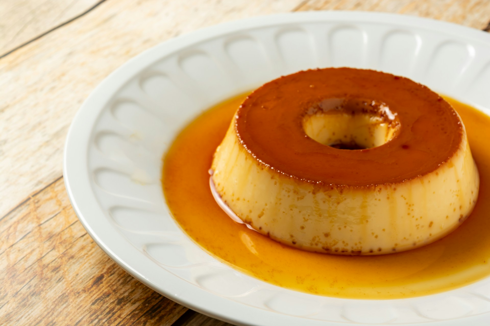

Página inicial
Pudim

Description
Veja como fazer essa receita de pudim de leite condensado lisinho e com uma calda perfeita de caramelo.
Ele é delicioso, barato e bem rápido de preparar!
Ingredients
- 1 lata de leite condensado
- 1 lata de leite
- 3 ovos inteiros
- 1 xícara (chá) de açúcar
- 1/2 xícara de água
- Primeiro, bata bem os ovos no liquidificador.
- Acrescente o leite condensado e o leite, e bata novamente.
- Derreta o açúcar na panela até ficar moreno, acrescente a água e deixe engrossar.
- Coloque em uma forma redonda e despeje a massa do pudim por cima.
- Asse em forno médio por 45 minutos, com a assadeira redonda dentro de uma maior com água.
- Espete um garfo para ver se está bem assado.